이 프로젝트의 이름은 Product in a Tin이다. 다 쓴 재활용 깡통(recycled tin)을 골라, 그 안에 들어갈 제품을 만들고, 깡통 겉면도 새로 리브랜딩(rebrand)하는 것이 과제다. 앞선 학생들의 예시로 깡통 속 선풍기, 펠트로 만든 음식 장난감, 손으로 만든 공기놀이 세트, 피부·머리 관리 세트 같은 것이 나와 있다.
첫 단계는 마인드맵(mind map)이다. 일곱 가지 질문에 답을 채워야 하는데, 어떤 종류의 깡통을 쓸지, 안에 무엇이 들어갈지, 누가 쓸지, 어떤 문제를 해결하는지, 어떤 재미있는(novelty) 아이디어가 인기 있을지, 내 관심사·취미·정체성을 보여주는 제품은 무엇인지, 이 깡통이 겉보기 이상이 되려면 어떻게 해야 하는지다. 글만 쓰지 말고 그림·사진을 섞어 보기 좋게(aesthetic) 만들어 DT 포트폴리오에 슬라이드로 올려야 한다.
두 번째 단계는 상황(situation)과 디자인 과제(design brief) 쓰기다. 상황은 배경 이야기로, 왜 이 디자인이 필요한지·누가 쓸지·어떤 문제나 기회가 있는지를 설명한다. 디자인 과제는 짧은 의도 진술문으로, 무엇을 디자인할지·누구를 위한 것인지·제품의 목적이 무엇인지를 밝힌다. 자료에 문장 시작 틀이 나와 있다. "People often struggle with ______. A recycled tin could be reused as ______ to help ______."
세 번째 단계는 고객 프로필(customer profile)이다. 모든 제품은 특정한 누군가를 위해 디자인되며, 고객 프로필은 디자인하기 전에 그 사람의 필요를 이해하도록 도와준다. 나이·성별·사는 곳·직업처럼 공통점으로 사람들을 묶어 설명하는 방식을 인구통계(demographic)라고 한다. 고객의 나이, 관심사, 필요(가족·반려동물·생활방식), 직업과 수입, 원하는 것을 정리해야 한다.
✍️ 꼭 알아야 하는 것
- 상황(situation)과 디자인 과제(design brief)의 차이를 구분할 수 있어야 한다. 상황은 '왜 필요한가'라는 배경이고, 디자인 과제는 '무엇을, 누구를 위해, 어떤 목적으로 만드는가'라는 선언이다.
- 자기 점검(self check) 항목 다섯 가지를 통과해야 한다. 문제나 필요를 분명히 설명했는지, 사용자·고객을 정했는지, 깡통 안에 무엇이 들어갈지 말했는지, 깡통을 어떻게 리브랜딩할지 설명했는지, 그리고 학교와 집에서 실제로 만들 수 있는 현실적인 계획인지다.
- 도움 자료(HELP HUB)의 예시 네 가지는 참고용이며 그대로 베끼지 말라고 적혀 있다.

1쪽 · 이 제품은 왜 만들어졌나
이 디자인은 시장의 어떤 기회를 채웠는가?
이 디자인은 그것이 designed for 한 사람들에게 어떻게 매력적으로 다가가는가?
왜 누군가가 이것을 디자인했는가?
아래 제품을 살펴보자.
제품을 볼 때 '누구를 위해(사용자)', '어떤 시장 기회', '어떻게 끌리게 만드는가', '왜 만들었나' 네 가지를 묻는다는 것을 알아야 한다.
나이·성별·소득은 사용자를 정하는 기준이 된다는 것을 알아야 한다.
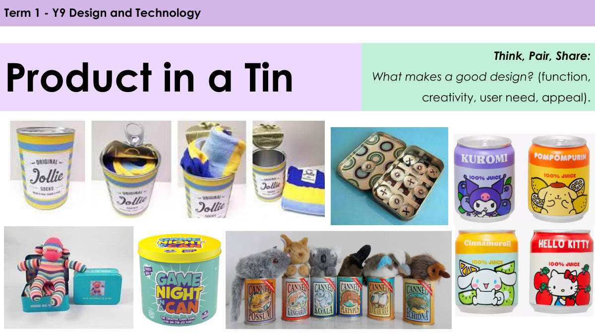
2쪽 · 좋은 디자인이란 무엇인가
깡통 속 제품(Product in a Tin)
생각하고, 짝과 나누고, 함께 말하기:
좋은 디자인이란 무엇인가? (기능, 창의성, 사용자 요구, 매력)
이 단원의 이름은 'Product in a Tin'(깡통 속 제품)이고, 9학년 1학기 디자인과 기술 수업이다.
좋은 디자인을 판단하는 네 가지 기준으로 기능·창의성·사용자 요구·매력이 제시된다.
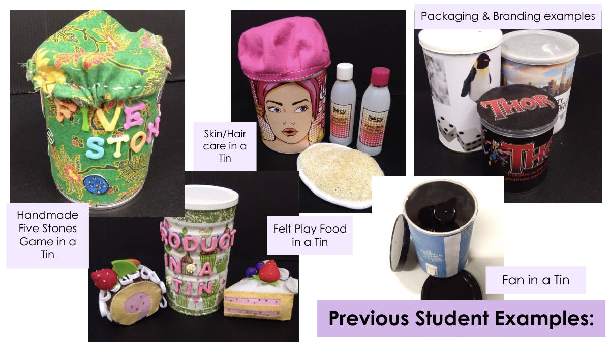
3쪽 · 이전 학생 작품 예시
깡통 속 선풍기
포장과 브랜딩 예시
깡통 속 펠트 장난감 음식
깡통 속 손으로 만든 공기놀이 게임
깡통 속 피부·머리 관리 용품
선배들이 만든 깡통 제품 예시를 보여 주는 쪽이다
선풍기, 펠트 음식, 공기놀이, 피부·머리 관리 용품처럼 서로 다른 종류가 나온다

4쪽 · 제품 아이디어
빈칸에 캔에 담을 제품 아이디어를 적는 쪽이다
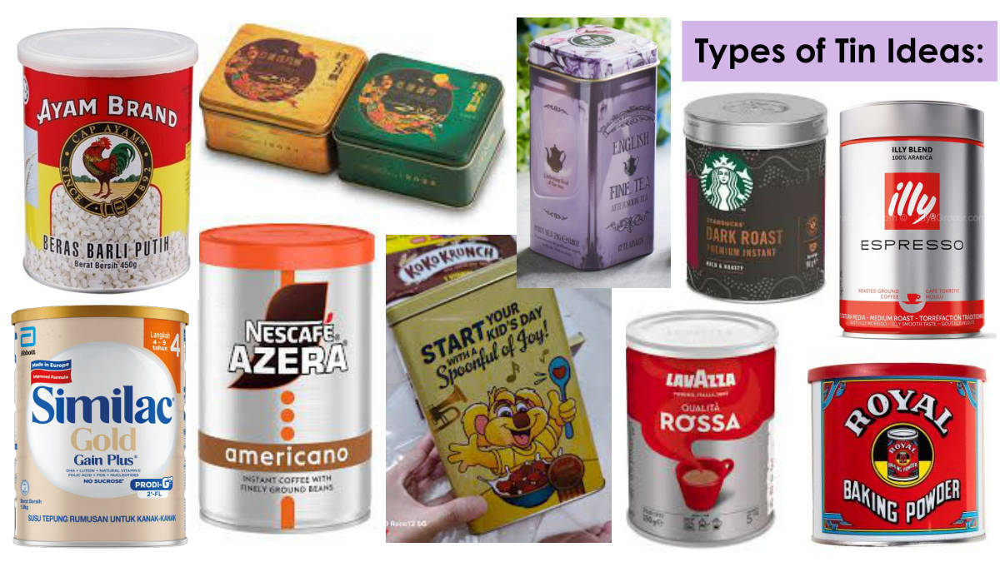
5쪽 · 틴 종류 아이디어
이 쪽은 틴 종류에 대한 아이디어를 적는 칸이다

6쪽 · 틴 프로젝트 마인드맵 만들기
● 프로젝트 과제 설명서(brief)와 무엇이 성공적인 디자인 결과물을 만드는지 이해한다.
● 틴(tin, 양철통)을 영감으로 삼는 창의적 가능성을 탐색한다.
● 고른 틴과 연결된 초기 제품 아이디어를 만들고 기록한다.
마인드맵 - AO1
과제: 주어진 질문들을 활용해 'Product in a Tin' 프로젝트에 대한 자신의 모든 아이디어를 탐색하는, 시각적이고 보기 좋은 마인드맵을 만든다.
마인드맵에 적을 것…
1. 어떤 종류의 틴을 쓸 수 있는가?
2. 그 안에 무엇이 들어갈 수 있는가?
3. 누가 그것을 쓸 것인가?
4. 어떤 문제를 해결할 수 있는가?
5. 어떤 재미있는 / 신기한(novelty) 개념이 인기를 끌 수 있는가?
6. 어떤 제품이 나의 관심사, 취미, 정체성을 보여주는가?
7. 이 틴이 어떻게 보이는 것 이상이 될 수 있는가?
이 쪽의 과제는 마인드맵 한 장이며, 평가 항목은 AO1이다. 글씨만 적는 것이 아니라 시각적이고 보기 좋게 꾸며야 한다.
마인드맵에 답해야 할 질문이 7개로 정해져 있다. 틴의 종류, 내용물, 사용자, 해결할 문제, 재미 요소, 나의 관심사·취미·정체성, 그리고 겉보기 이상의 가치까지 모두 다뤄야 한다.
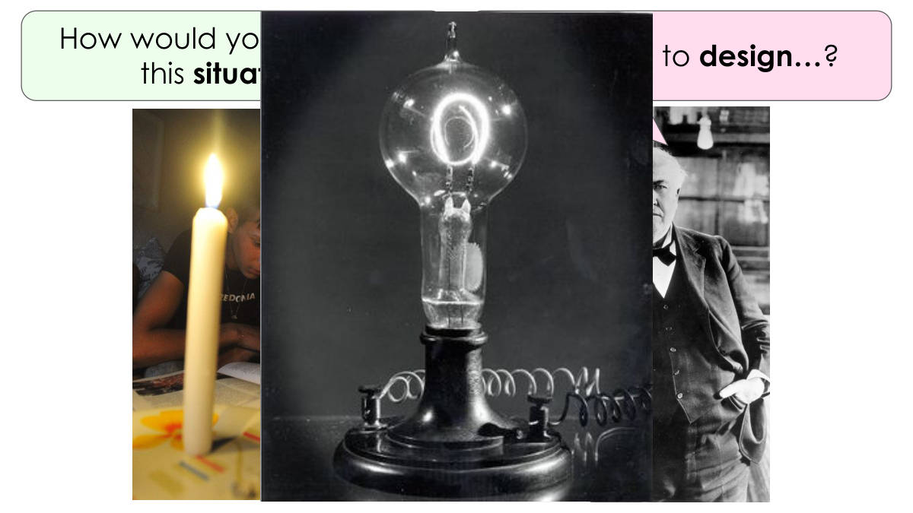
7쪽 · 이 상황을 어떻게 설명할까
나는 …을 디자인할 것이다.
과제를 시작하기 전에 주어진 상황을 자기 말로 설명해 보는 단계다
'I'm going to design…'처럼 무엇을 디자인할지 한 문장으로 밝히는 연습이다
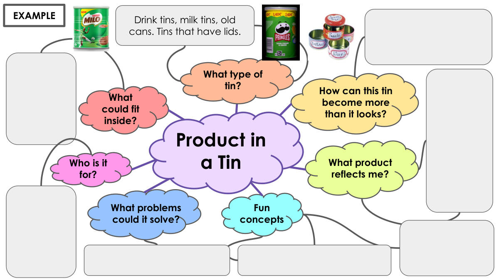
8쪽 · 틴 제품 아이디어 지도
누구를 위한 것인가?
어떤 문제를 해결할 수 있는가?
재미있는 개념
어떤 제품이 나를 드러내는가?
이 틴이 어떻게 보이는 것 이상이 될 수 있는가?
어떤 종류의 틴인가?
안에 무엇이 들어갈 수 있는가?
틴 속의 제품
음료 캔, 분유 통, 오래된 캔. 뚜껑이 있는 틴.
'틴 속의 제품'을 가운데 두고 사용자·문제·재미·나다움·틴 종류·내용물로 뻗어 나가는 생각 지도의 예시다
틴은 뚜껑이 있는 것이어야 하며 음료 캔·분유 통·오래된 캔 같은 것이 해당된다
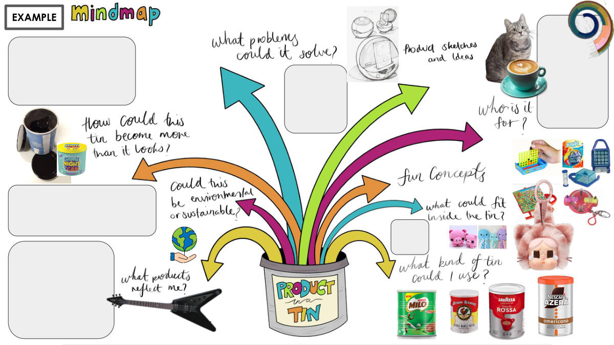
9쪽 · 예시
이 쪽은 '예시'라는 낱말 하나만 적혀 있다.

10쪽 · 마인드맵 자기점검
글과 이미지를 알맞게 섞어 썼는가
다양한 생각과 답을 담았는가
내 마인드맵이 보기 좋은 형태를 갖추었는가
내 마인드맵을 DT 포트폴리오 슬라이드로 Gclass에 올렸는가
마인드맵
나는 했는가…
마인드맵을 제출하기 전에 스스로 점검하는 목록이다
글자만 쓰지 말고 이미지를 섞고, 보기 좋게 정리해 Gclass의 DT 포트폴리오에 슬라이드로 올려야 한다
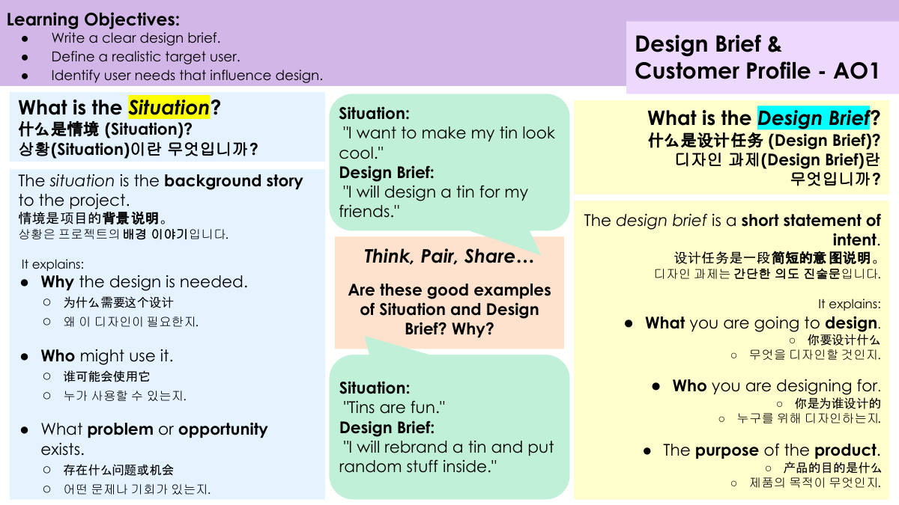
11쪽 · 디자인 과제와 고객 프로필
● 명확한 디자인 과제(design brief)를 쓴다.
● 현실적인 목표 사용자를 정한다.
● 디자인에 영향을 주는 사용자 요구를 찾아낸다.
디자인 과제 & 고객 프로필 - AO1
상황(Situation)이란 무엇인가?
상황은 프로젝트의 배경 이야기다.
상황은 이런 것을 설명한다.
● 왜 이 디자인이 필요한지.
● 누가 사용할 수 있는지.
● 어떤 문제나 기회가 있는지.
디자인 과제(Design Brief)란 무엇인가?
디자인 과제는 간단한 의도 진술문이다.
디자인 과제는 이런 것을 설명한다.
● 무엇을 디자인할 것인지.
● 누구를 위해 디자인하는지.
● 제품의 목적이 무엇인지.
생각하고, 짝과 나누고, 발표하기
다음이 상황과 디자인 과제의 좋은 예인가? 왜 그런가?
상황: "내 깡통을 멋지게 만들고 싶다."
디자인 과제: "나는 친구들을 위한 깡통을 디자인할 것이다."
상황: "깡통은 재미있다."
디자인 과제: "나는 깡통을 리브랜딩하고 안에 아무거나 넣을 것이다."
상황(Situation)은 프로젝트의 배경으로 왜 필요한지, 누가 쓰는지, 어떤 문제나 기회가 있는지를 설명한다.
디자인 과제(Design Brief)는 무엇을·누구를 위해·어떤 목적으로 디자인하는지를 밝히는 짧은 의도 진술문이다.
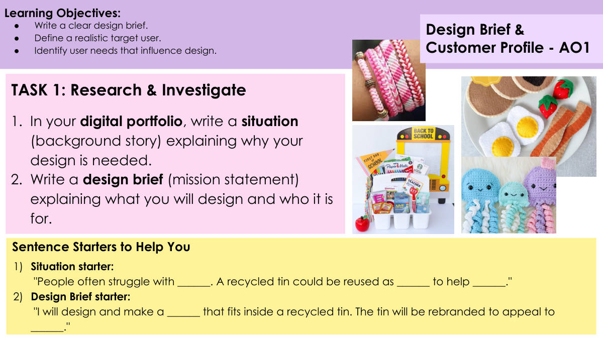
12쪽 · 디자인 브리프와 고객 프로필
명확한 디자인 브리프를 쓴다.
현실적인 목표 사용자를 정한다.
디자인에 영향을 주는 사용자의 필요를 찾아낸다.
디자인 브리프 & 고객 프로필 - AO1
과제 1: 조사하고 탐구하기
1. 디지털 포트폴리오에 이 디자인이 왜 필요한지 설명하는 상황(배경 이야기)을 쓴다.
2. 무엇을 디자인할 것이고 누구를 위한 것인지 설명하는 디자인 브리프(사명문)를 쓴다.
도움이 되는 문장 시작말
1) 상황 시작말:
"사람들은 종종 ______ 때문에 어려움을 겪는다. 재활용 깡통을 ______로 다시 쓰면 ______에 도움이 될 수 있다."
2) 디자인 브리프 시작말:
"나는 재활용 깡통 안에 들어가는 ______를 디자인하고 만들 것이다. 그 깡통은 ______의 마음에 들도록 다시 브랜딩할 것이다."
디지털 포트폴리오에 쓸 것은 두 가지다 — 왜 필요한지 설명하는 상황(배경 이야기)과, 무엇을 누구를 위해 만드는지 밝히는 디자인 브리프다.
디자인 브리프에는 깡통 안에 들어갈 제품과 그 깡통을 다시 브랜딩해 마음에 들게 할 목표 사용자가 함께 들어가야 한다.
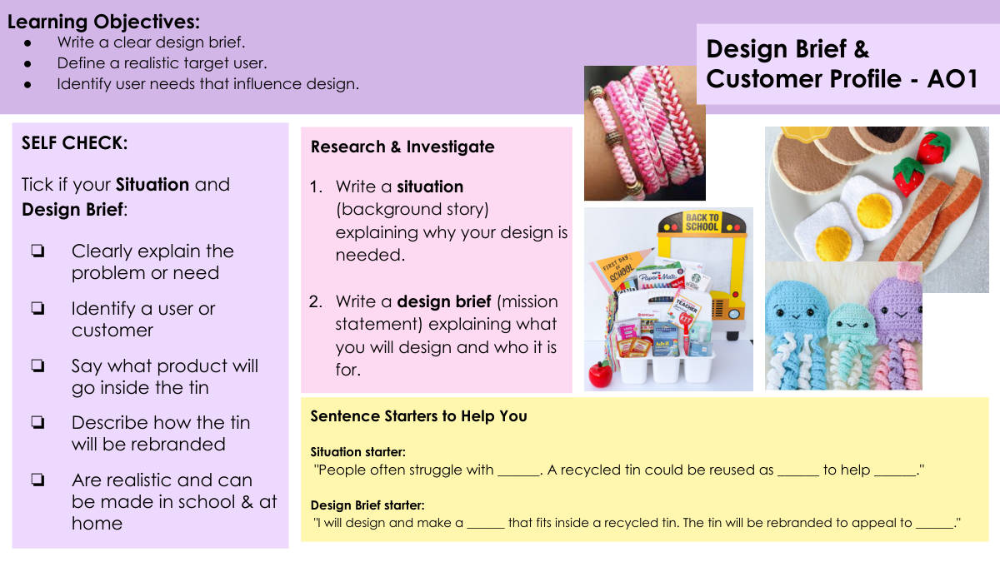
13쪽 · 디자인 브리프와 고객 프로필
학습 목표
● 명확한 디자인 브리프를 쓴다.
● 현실적인 목표 사용자를 정한다.
● 디자인에 영향을 주는 사용자 요구를 찾아낸다.
조사하기
1. 왜 내 디자인이 필요한지 설명하는 상황(배경 이야기)을 쓴다.
2. 무엇을 디자인할지, 누구를 위한 것인지 설명하는 디자인 브리프(사명문)를 쓴다.
도움이 되는 문장 시작 틀
상황 시작 틀: "사람들은 흔히 ______ 때문에 어려움을 겪는다. 재활용 깡통을 ______로 다시 쓰면 ______에 도움이 될 수 있다."
디자인 브리프 시작 틀: "나는 재활용 깡통 안에 들어가는 ______을 디자인하고 만들 것이다. 그 깡통은 ______의 마음에 들도록 리브랜딩될 것이다."
스스로 점검
내 상황과 디자인 브리프가 아래에 해당하면 표시한다:
❏ 문제나 필요를 분명히 설명한다
❏ 사용자나 고객을 정한다
❏ 깡통 안에 어떤 제품이 들어갈지 말한다
❏ 깡통을 어떻게 리브랜딩할지 설명한다
❏ 현실적이며 학교와 집에서 만들 수 있다
'상황'은 왜 이 디자인이 필요한지 배경을 쓰는 것이고, '디자인 브리프'는 무엇을 누구를 위해 만들지 밝히는 것이다. 둘은 역할이 다르다.
제출 전 스스로 점검 다섯 칸(문제·사용자·안에 들어갈 제품·리브랜딩 방법·학교와 집에서 만들 수 있는 현실성)을 모두 채웠는지 확인한다.
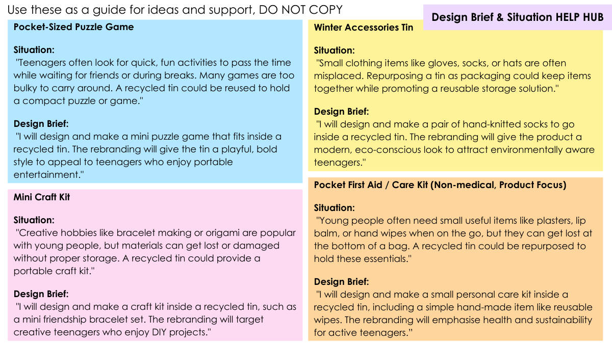
14쪽 · 주제 아이디어 예시 4가지
주머니 크기 퍼즐 게임
상황: "십대들은 친구를 기다리거나 쉬는 시간에 시간을 보낼 빠르고 재미있는 활동을 자주 찾는다. 많은 게임은 들고 다니기에 너무 부피가 크다. 재활용 깡통을 다시 써서 작은 퍼즐이나 게임을 담을 수 있다."
디자인 브리프: "나는 재활용 깡통 안에 들어가는 미니 퍼즐 게임을 디자인하고 만들 것이다. 리브랜딩은 깡통에 장난기 있고 대담한 스타일을 주어, 휴대용 오락을 즐기는 십대에게 어필할 것이다."
미니 공예 키트
상황: "팔찌 만들기나 종이접기 같은 창의적 취미는 젊은이들에게 인기 있지만, 제대로 된 보관이 없으면 재료를 잃어버리거나 망가뜨리기 쉽다. 재활용 깡통은 휴대용 공예 키트가 될 수 있다."
디자인 브리프: "나는 재활용 깡통 안에 미니 우정팔찌 세트 같은 공예 키트를 디자인하고 만들 것이다. 리브랜딩은 DIY 프로젝트를 즐기는 창의적인 십대를 겨냥할 것이다."
겨울 액세서리 깡통
상황: "장갑, 양말, 모자 같은 작은 의류는 자주 어디 뒀는지 잊어버린다. 깡통을 포장재로 다시 쓰면 물건을 한데 모아 두면서 재사용 가능한 보관 방법을 알릴 수 있다."
디자인 브리프: "나는 재활용 깡통 안에 들어갈 손뜨개 양말 한 켤레를 디자인하고 만들 것이다. 리브랜딩은 제품에 현대적이고 친환경적인 느낌을 주어 환경을 의식하는 십대를 끌어들일 것이다."
주머니 구급 / 케어 키트 (의료용 아님, 제품 중심)
상황: "젊은이들은 이동 중에 반창고, 립밤, 물티슈 같은 작고 유용한 물건이 자주 필요하지만, 가방 바닥에서 잃어버리기 쉽다. 재활용 깡통을 이런 필수품을 담는 용도로 다시 쓸 수 있다."
디자인 브리프: "나는 재활용 깡통 안에 작은 개인 케어 키트를 디자인하고 만들 것이며, 여기에는 재사용 물티슈 같은 간단한 손수 만든 물건이 들어간다. 리브랜딩은 활동적인 십대를 위한 건강과 지속가능성을 강조할 것이다."
디자인 브리프 & 상황 도움 코너
네 가지 예시는 베끼라고 준 것이 아니라 아이디어를 얻는 안내용이다. 그대로 복사하면 안 된다.
예시마다 형식이 같다 — 상황(왜 필요한가)을 먼저 쓰고, 디자인 브리프(무엇을 만들고 누구를 겨냥하는가)를 그다음에 쓴다.
네 예시 모두 '재활용 깡통을 다시 쓴다'는 점과 '십대를 겨냥한다'는 점이 공통이다.
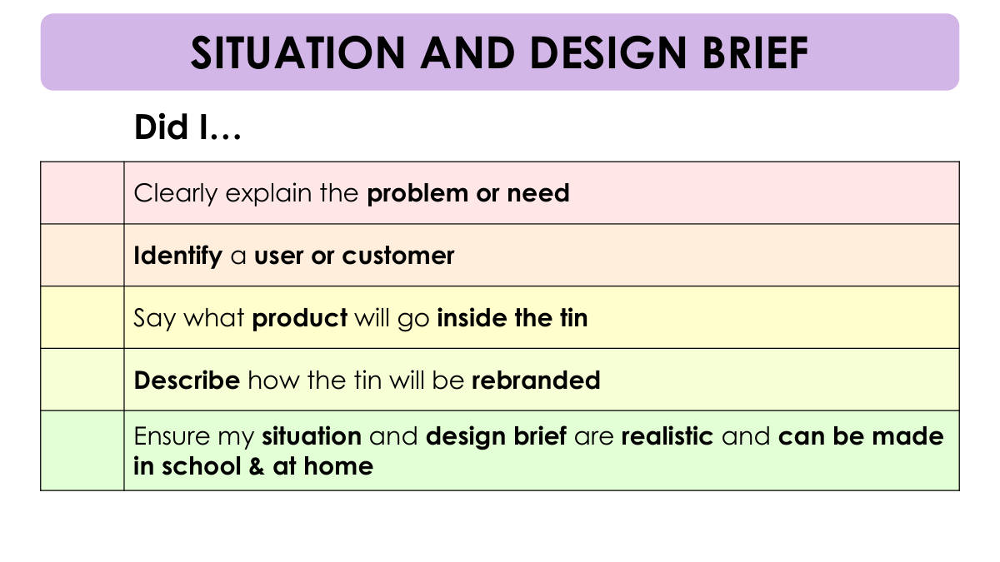
15쪽 · 상황과 디자인 브리프 점검
나는 …했는가?
문제나 필요를 분명하게 설명했는가
사용자 또는 고객을 정했는가
깡통 안에 어떤 제품이 들어갈지 말했는가
깡통을 어떻게 리브랜딩할지 설명했는가
내 상황과 디자인 브리프가 현실적이고 학교와 집에서 만들 수 있는지 확인했는가
상황과 디자인 브리프를 다 썼는지 스스로 점검하는 확인 목록이다
문제 설명, 사용자 정하기, 들어갈 제품, 리브랜딩 방법, 학교와 집에서 만들 수 있는 현실성 다섯 가지를 확인한다

16쪽 · 이 제품은 누구를 위한 것일까
이 제품들은 누구를 위해 만들어졌다고 생각하는가?
그 수요층을 설명해 보자.
제품마다 겨냥한 사용자 집단이 따로 있다는 것을 생각해 보는 쪽이다
demographic은 나이·성별·취향 같은 특징으로 묶은 사용자 집단을 뜻한다
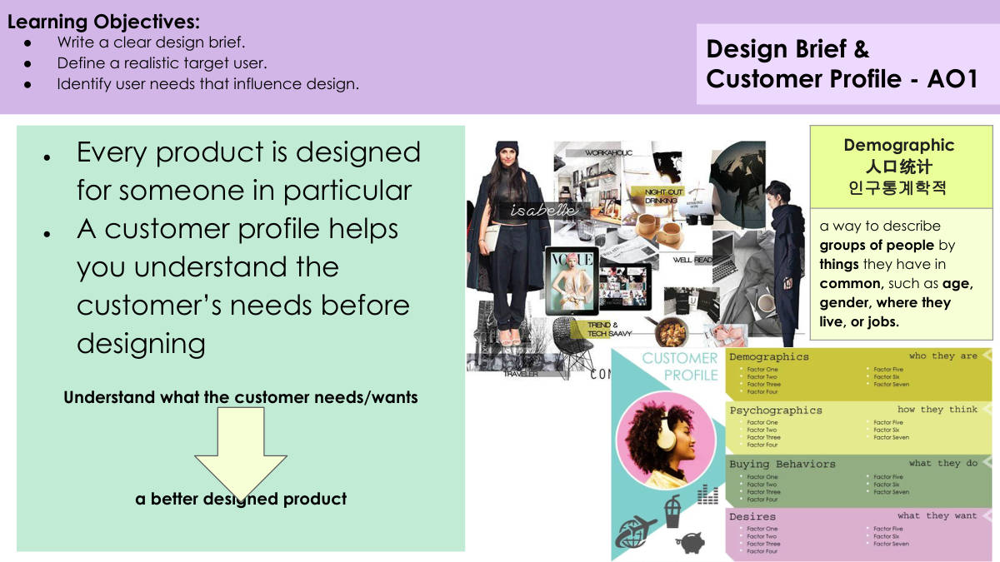
17쪽 · 디자인 브리프와 고객 프로필
명확한 디자인 브리프를 쓴다.
현실적인 목표 사용자를 정한다.
디자인에 영향을 주는 사용자의 필요를 찾아낸다.
디자인 브리프 & 고객 프로필 - AO1
모든 제품은 특정한 누군가를 위해 디자인된다.
고객 프로필은 디자인하기 전에 고객의 필요를 이해하도록 도와준다.
고객이 무엇을 필요로 하고 원하는지 이해한다 → 더 잘 디자인된 제품
Demographic(인구통계학적) — 나이, 성별, 사는 곳, 직업처럼 공통점으로 사람들의 무리를 설명하는 방법이다.
모든 제품에는 정해진 사용자가 있고, 고객 프로필은 디자인을 시작하기 전에 그 사람의 필요를 파악하는 도구다.
Demographic(인구통계학적)은 나이·성별·사는 곳·직업 같은 공통점으로 사람들을 무리 지어 설명하는 말이다.
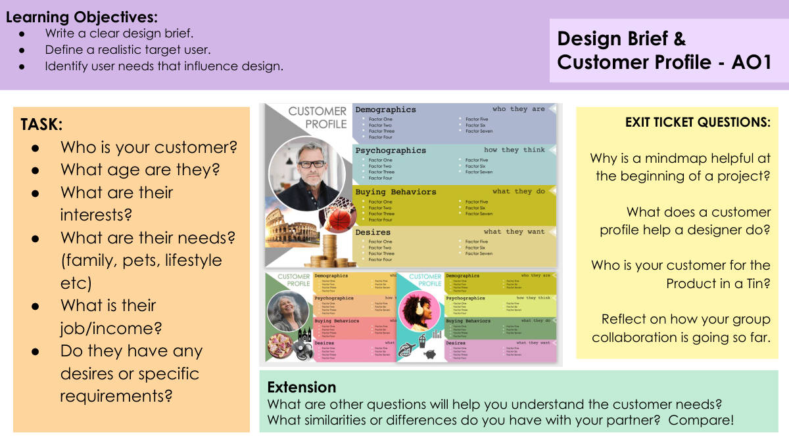
18쪽 · 디자인 브리프와 고객 프로필
내 고객은 누구인가?
그들의 나이는 몇 살인가?
그들의 관심사는 무엇인가?
그들의 필요는 무엇인가? (가족, 반려동물, 생활방식 등)
그들의 직업/수입은 무엇인가?
그들에게 어떤 바람이나 특별한 요구사항이 있는가?
심화
고객의 필요를 이해하는 데 도움이 될 다른 질문은 무엇이 있는가?
짝과 나 사이에 어떤 공통점이나 차이점이 있는가? 비교해 보라!
퇴장 티켓 질문
프로젝트를 시작할 때 마인드맵이 왜 도움이 되는가?
고객 프로필은 디자이너가 무엇을 하도록 돕는가?
Product in a Tin의 내 고객은 누구인가?
지금까지 우리 모둠의 협업이 어떻게 되어 가고 있는지 돌아보라.
학습 목표
명확한 디자인 브리프를 쓴다.
현실적인 목표 사용자를 정한다.
디자인에 영향을 주는 사용자의 필요를 찾아낸다.
디자인 브리프 & 고객 프로필 - AO1
고객 프로필을 만들 때 던지는 질문은 나이·관심사·필요·직업과 수입·특별한 요구사항 여섯 가지다.
이 쪽의 학습 목표는 명확한 디자인 브리프 쓰기, 현실적인 목표 사용자 정하기, 디자인에 영향을 주는 사용자의 필요 찾아내기 세 가지다.

19쪽 · 사용자 프로필 예시 — 24세 음악가
여성
나이 24세
Damansara의 음반 가게에서 일한다
혼자 산다
고양이 2마리를 기른다
일렉트릭 기타를 친다
커피 마시는 것을 좋아한다
그들은 무엇을 생각하는가
환경 친화적인 것이 매우 중요하다
미술과 음악이 그녀의 삶에서 큰 부분을 차지한다
비싼 명품 브랜드는 돈 낭비다
그들은 무엇을 하는가
파트타임으로 음악을 가르친다
밴드의 일원이며 밤늦게 여러 다른 공연장에서 연주한다
주말에는 고양이를 데리고 카페에 간다
그들은 무엇을 원하는가
어두운 색의 현대적이고 세련된 제품
휴대하기 쉽고 들고 다니기 편한 것
쓸모 있으면서 보기에도 예쁜 것
예시
사용자 프로필을 Who They Are(누구인가)·What They Think(생각)·What They Do(행동)·What They Want(원하는 것) 네 칸으로 나눠 정리한 예시 쪽이다.
맨 아래 EXAMPLE 표시가 있으므로 이 인물은 실제 조사 대상이 아니라 내가 따라 만들 견본이다. 성별·나이·직업 같은 사실뿐 아니라 가치관과 생활 습관까지 적어야 제품 요구사항(어두운 색·휴대성·실용성+심미성)이 근거를 갖는다.

20쪽 · 제품 디자인 스케치 예시
이 그림들에서 무엇이 눈에 띄는가?
이런 그림을 그리는 것의 이점은 무엇인가?
제품 디자인 스케치의 예시를 보고 무엇이 눈에 띄는지 살펴보는 쪽이다
이런 그림을 그리면 어떤 이점이 있는지 생각해 봐야 한다
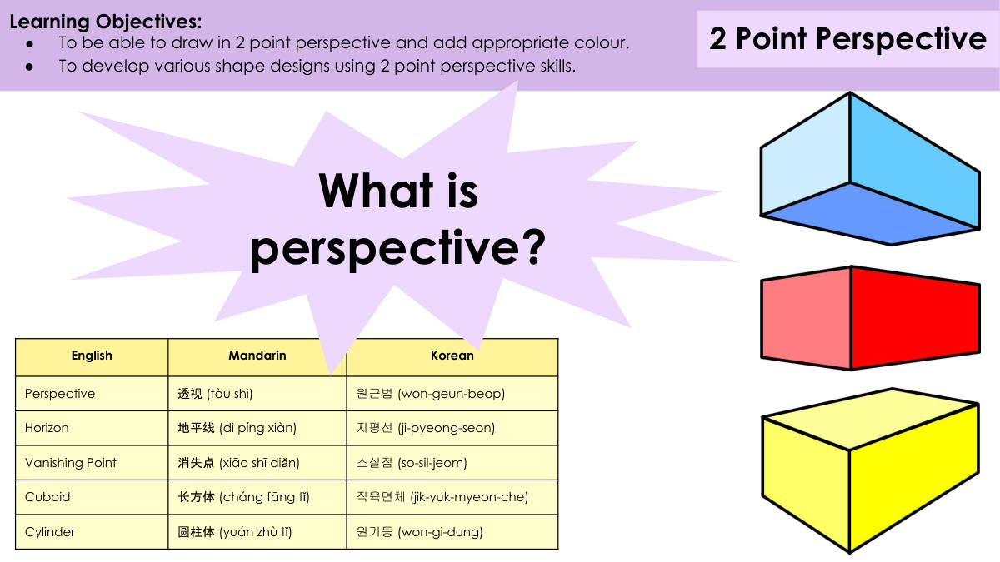
21쪽 · 2점 투시도법과 미술 용어
학습 목표:
● 2점 투시도법으로 그리고 알맞은 색을 칠할 수 있다.
● 2점 투시도법 기술을 써서 여러 가지 모양 디자인을 발전시킬 수 있다.
2점 투시도법
영어 / 중국어 / 한국어
Perspective — 透视 (tòu shì) — 원근법
Horizon — 地平线 (dì píng xiàn) — 지평선
Vanishing Point — 消失点 (xiāo shī diǎn) — 소실점
Cuboid — 长方体 (cháng fāng tǐ) — 직육면체
Cylinder — 圆柱体 (yuán zhù tǐ) — 원기둥
원근법이란 무엇인가?
이 쪽의 목표는 두 가지다. 2점 투시도법으로 그리고 알맞은 색을 칠하는 것, 그리고 2점 투시도법 기술로 여러 모양 디자인을 발전시키는 것이다.
영어 용어 다섯 개를 한국어로 외워 두어야 한다. Perspective(원근법), Horizon(지평선), Vanishing Point(소실점), Cuboid(직육면체), Cylinder(원기둥)이다.

22쪽 · 2점 투시도법
물체를 지평선(Horizon) 위의 소실점 두 개로 나타내는 그리기 방법이다.
이 방법은 깊이감을 만들어, 물체의 두 면이 멀리 물러나며 사라지는 것처럼 보이게 한다.
• 지평선
• 소실점 두 개
• 모서리에서부터 그린다
• 디자인에 깊이를 더하는 쉬운 방법이다
• 아이디어를 전달하는 시각적 도구다
학습 목표
• 2점 투시도법으로 그리고 알맞은 색을 칠할 수 있다.
• 2점 투시도법 기술로 여러 가지 모양 디자인을 발전시킬 수 있다.
소실점 두 개를 지평선 위에 잡고, 물체의 모서리에서부터 선을 그어 나가는 것이 2점 투시도법이다.
2점 투시도법은 물체의 두 면이 멀어지며 사라지는 것처럼 보이게 해 깊이감과 공간감을 만든다.

23쪽 · 2점 투시 틀린 곳 찾기
본 것을 설명할 때 핵심 낱말을 쓰라.
핵심 낱말
평행
수평선
소실점
직육면체
선
명암
광원
잘못 그린 2점 투시도를 보고 어디가 틀렸는지 찾아내는 활동이다
설명할 때 평행·수평선·소실점·직육면체·선·명암·광원이라는 낱말을 써야 한다